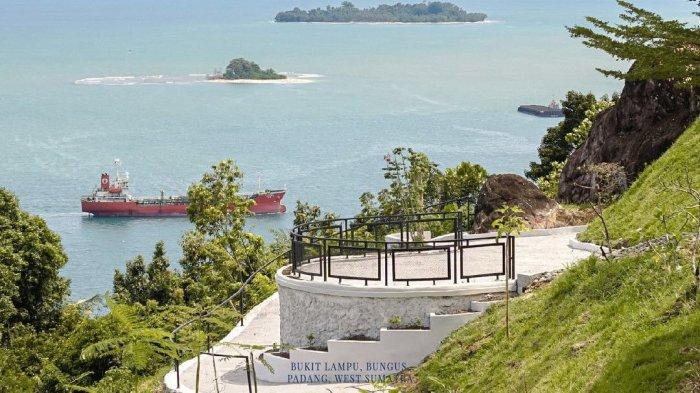

Bukit Lampu Bungus
Bukit Lampu di Bungus, Kota Padang, merupakan destinasi wisata alam dan sejarah yang menarik dengan pemandangan laut yang indah, mercusuar peninggalan Belanda, serta terowongan (lubang) Jepang dari masa Perang Dunia II. Terletak sekitar 12 km dari pusat Kota Padang di jalur Padang–Painan, tempat ini juga dilengkapi Convention Hall empat lantai dengan fasilitas kafe, ruang pertemuan, dan kamar tamu yang menghadap langsung ke laut. Dari puncaknya, pengunjung bisa menikmati panorama Teluk Bayur dan Pulau Bungus sambil bersantai di kafe yang menyuguhkan live music. Bukit ini juga dikenal sebagai lokasi masyarakat mencari durian, namun karena medannya licin dan rawan longsor, pengunjung disarankan berhati-hati dan mempersiapkan diri dengan baik, terutama saat musim hujan. Akses jalan yang sering tertutup longsor juga perlu diwaspadai, sehingga waktu terbaik untuk berkunjung adalah pagi atau sore hari saat cuaca cerah.
Kembali